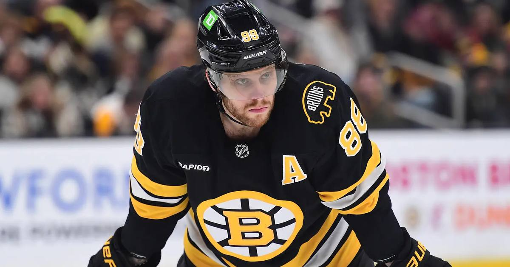

Bruins Blank Predators 6-0: Pastrnak Explodes, DiPietro Earns First Career Shutout
David Pastrnak went off for two goals and two assists, Charlie McAvoy stacked four assists — and Michael DiPietro stopped all 28 shots for his first career NHL shutout in Boston's 6-0 rout of Nashville.

The Bruins stayed atop the Atlantic Division with a 6-0 thrashing of Nashville at TD Garden — and the story in net was as good as the one on the scoresheet.
The Night
• Final: Bruins 6, Predators 0
• David Pastrnak — 2 goals, 2 assists
• Charlie McAvoy — 4 assists
• Casey Mittelstadt — opener stood up as the game-winner
• Michael DiPietro — stopped all 28 shots for his first career NHL shutout — and only his second career win — flashing huge saves early to keep it 2-0
The Stakes
• Bruins: 8-2-1 (17 points), first in the Atlantic, 6-0-1 over their last seven
• Predators: fourth loss in five (3-3-3); Justus Annunen made 25 saves in his first start off IR
A backup goalie's first career shutout on a night the stars did the rest. That's a team firing on everything.
Sources: Reuters — 'David Pastrnak scores 2 goals, Bruins thrash Predators' · The Tennessean — 'Nashville Predators shut out 6-0 by Boston Bruins'
Gear up: Fanatics